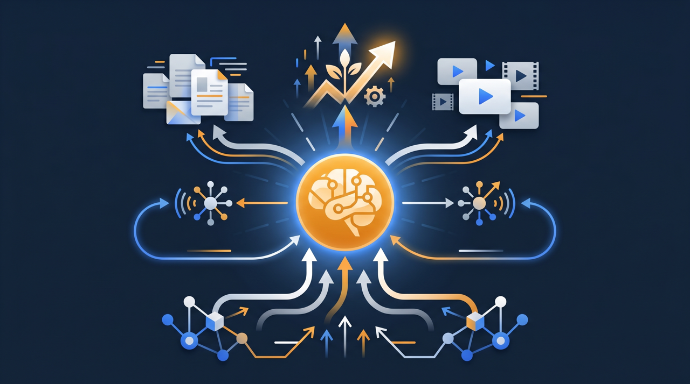
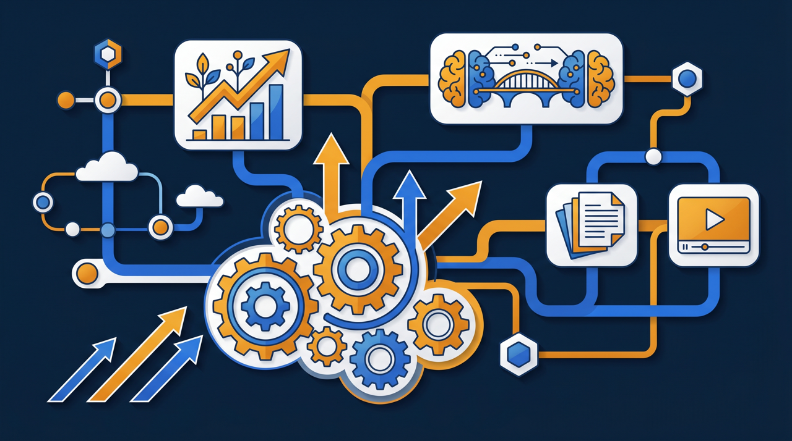
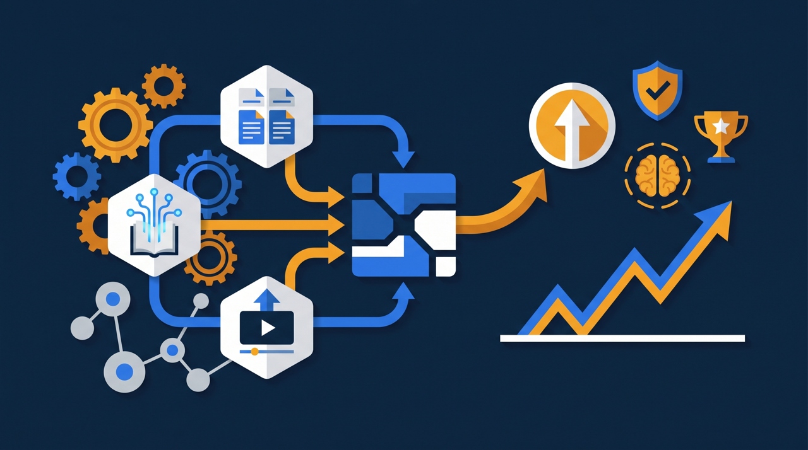

「教育に手が回らない」「教える人が決まっていて、その人が忙しいと止まる」——中小企業の人材育成では、こうした悩みをよく耳にします。大企業のように研修部門も予算もない中で、どう人を育てればいいのか。この記事では、属人的なOJTに頼った育成から、誰でも回せる「仕組み化された教育」へ変えていくことのメリットと、人手も時間も限られた中で無理なく始める進め方を、経営目線で整理します。

中小企業の人材育成は、なぜ難しいのか
まず、中小企業の人材育成がなぜ難しいのか、その構造を整理しておきましょう。難しさの正体が分かると、どこに手を打てばいいかが見えてきます。
一番の制約は、やはり人手と時間です。大企業のように研修を専門に担う部署を置く余裕はなく、教育は現場のベテランや管理職が、通常業務の合間にこなすことになります。教えるための時間は、本来の仕事を止めて捻出するしかありません。その結果、「忙しいから今日は教えられない」ということが起き、育成が後回しになりがちです。
次に、教える内容が個人の頭の中にしかない、という問題があります。ベテランほど仕事が体に染みついているので、わざわざ言葉にする機会がありません。「見て覚えろ」が通用してしまうのは、教える側に経験があるからこそですが、裏を返せば、その経験が外に出ていないということでもあります。だから、教える人によって内容も質もばらつき、その人が休んだり辞めたりすると、教育そのものが止まってしまうわけです。
厚生労働省の能力開発基本調査でも、OJTは多くの企業で中心的な育成手段として位置づけられていますが、OJTは進め方を整えないと、こうした属人化に陥りやすい面があります。中小企業基盤整備機構が運営するJ-Net21などでも、人材の育成と定着は中小企業の経営課題として繰り返し取り上げられています。人が少ないからこそ、一人が抜けたときの影響が大きく、育成が止まりやすい——これが中小企業の人材育成の難しさの核心なんですね。
「個人に頼る教育」から「仕組みで回す教育」へ
では、どうすればこの難しさを和らげられるのでしょうか。鍵になるのが、「個人に頼る教育」から「仕組みで回す教育」への転換です。教育の仕組み化、と言い換えてもよいでしょう。
仕組み化とは、難しく考える必要はありません。これまで個人の経験や善意に頼って教えていたものを、教える内容・順番・基準として整理し、動画やマニュアル、確認テストといった、誰でも使える形に変えていくことです。誰が担当しても一定の質で教えられ、しかも記録が残る。この状態を目指すのが仕組み化です。

たとえば、これまでベテランが新人に付きっきりで3日かけて教えていた作業があったとします。そのうち半分が「毎回同じ説明」だったとしたら、その部分は動画にして任せられますよね。新人は自分のペースで何度でも見返せますし、ベテランは空いた時間を、応用やその人の癖に合わせた指導に回せます。教える総時間が減るだけでなく、教える中身の質まで上がっていく、というわけです。
- 教える人が変わっても、新人の到達レベルが揃いやすくなる
- 担当者が不在でも、教育が止まりにくくなる
- 毎回同じ説明を繰り返す負担が減る
- 誰がどこまで学んだかが記録に残り、フォローしやすくなる
- ベテランのノウハウが、会社の資産として蓄積されていく
ここで大切なのは、仕組み化はベテランの価値を下げるものではない、という点です。むしろ、ベテランが持っている貴重なノウハウを会社に残し、教える手間から解放する取り組みです。「あなたの仕事を奪う」のではなく「あなたが何度も同じことを教える手間を減らす」。この伝え方をすると、現場の協力を得やすくなる傾向があります。
仕組み化がもたらす経営的なメリット
教育の仕組み化は、現場の負担軽減だけでなく、経営にとっても大きな意味を持ちます。経営目線で見たメリットを整理してみましょう。
1つ目は、人の入れ替わりに強くなることです。中小企業では、一人の退職が大きな痛手になります。その人が持っていたノウハウが教材として残っていれば、後任の立ち上がりが早くなり、引き継ぎの負担も軽くなります。人が変わっても事業が回る土台ができる、というわけです。
2つ目は、育成のスピードが上がることです。新人が一定の質で、しかも自分のペースで学べるようになると、戦力になるまでの期間が縮まる傾向があります。採用してから現場で活躍するまでの時間が短くなれば、それだけ事業への貢献も早まります。
3つ目は、品質の安定です。教える人によって新人の到達レベルが変わる状態は、サービスや製品の品質のばらつきにもつながります。教育を標準化することで、誰が現場に立っても一定の質を保ちやすくなる。これは顧客からの信頼にも直結します。

そして4つ目に、採用や定着への効果もあります。教育の仕組みが整っている会社は、求職者から見て「ちゃんと育ててもらえる会社」に映ります。入社後も、放置されずに学べる環境があれば、早期の離職を防ぎやすくなる傾向があります。人が採れない、続かない、という悩みを抱える中小企業にとって、教育環境は採用の競争力にもなるんです。
ある地域の製造業では、ベテランの退職をきっかけに技術が失われかけたことを反省し、主要な作業を動画で残す取り組みを始めたそうです。すると、新人の立ち上がりが目に見えて早くなり、「教える専任者がいなくても回る」状態に近づいたといいます。仕組み化は、目の前の負担を減らすだけでなく、会社の未来を支える投資でもあるわけですね。
ここで、もう少し経営の数字に引きつけて考えてみましょう。仮に、新人が一人前になるまでの期間が、これまで半年かかっていたとします。仕組み化によってそれが4か月に縮まったとしたら、2か月分、早く戦力になってくれるわけです。一人あたりの効果は小さく見えても、毎年複数人を採用する会社なら、その積み重ねは決して無視できません。逆に、育成に時間がかかりすぎると、せっかく採用した人が戦力になる前に辞めてしまう、ということも起きがちです。育成のスピードは、採用コストを無駄にしないという意味でも、経営に直結する論点なんですね。
さらに見落とされがちなのが、教える側の時間です。ベテランや管理職が教育に取られる時間は、本来であれば本業や、より付加価値の高い仕事に使えたはずの時間です。毎回同じ説明を動画に任せられれば、その分の時間が経営に返ってきます。中小企業では、優秀な人ほど多くの役割を兼ねていることが多いので、その人の時間を空けられることの価値は、想像以上に大きいものです。
無理なく始めるための進め方
メリットは分かっても、「うちにそんな余裕はない」と感じる方もいらっしゃるでしょう。だからこそ、無理なく始める進め方が大切です。一気に全部をやろうとせず、小さく始めるのがコツです。
まず、対象を1つだけ選びます。「その人が辞めたら本当に困る業務」か「新人が毎回つまずく作業」を1つ。範囲を絞ると、関わる人も少なく、短期間で結果が見えるので、社内の納得を得やすくなります。あれもこれもと欲張ると、続かなくなってしまいますからね。
次に、ベテランの作業をそのまま記録します。きれいな編集は後回しで構いません。スマートフォンで、実際にやっているところを撮るだけでも十分に価値があります。撮りながら「今、なぜそうしたんですか」と聞いていくと、本人も気づいていなかったコツが言葉になって出てきます。これが、頭の中のノウハウを形にする第一歩です。
そして、見た後に簡単な確認をセットにします。動画を見せて終わり、にしないことが定着の分かれ目です。理解できているかを軽く確認し、つまずいた箇所があればその説明を足す。作って、使って、直す。この繰り返しで、教材は使うほど良くなっていきます。最初から完璧を目指さず、まず1本作って共有してみる。動き出してしまえば、現場から「この作業も動画にしてほしい」という声が出てきて、自走が始まることも多いんです。
なお、こうして作った教材は、1か所にまとめて管理することをおすすめします。各自のパソコンやチャットに散らばると、どこにあるか分からなくなり、また属人化に逆戻りしてしまいます。動画・マニュアル・確認テストを集め、誰がどこまで学んだかを記録できる学習管理システム（LMS）に置くと、教材を組織の資産として運用しやすくなります。
進め方のもう一つのコツは、最初の成功例を社内に見せることです。一つの業務で仕組み化がうまくいき、「教える時間が減った」「新人がすぐ動けるようになった」という実感が生まれると、周りの人も「自分の業務でもやってみたい」と思い始めます。トップダウンで一斉に全部を変えようとするより、小さな成功を見せて、自然に広げていくほうが、現場の抵抗が少なく定着しやすい傾向があります。中小企業は規模が小さい分、良い取り組みが社内に伝わるのも早いので、この「見せて広げる」進め方が効きやすいんですね。
費用面の不安には、助成金の活用も
仕組み化を進めるうえで、費用の不安は避けて通れません。けれど、お金をかけずに始められる部分もありますし、制度を活用して負担を抑える道もあります。
まず、撮影はスマートフォンから始められます。最初から高価な機材やソフトをそろえる必要はありません。手元の道具で小さく始め、効果が見えてきたら少しずつ環境を整えていく、という進め方で十分です。
そして、研修にかかる費用は、人材開発支援助成金のように、訓練の経費や賃金の一部を国が支援する制度を活用できる場合があります。eラーニングや動画研修の整備にも活用できることがあり、これにより費用負担を抑えながら教育環境を整えられる可能性があります。中小企業庁や厚生労働省では、中小企業の人材育成を後押しするさまざまな施策が用意されていますので、自社が使える制度がないかを確認してみる価値はあります。
費用面の制約を理由に教育を後回しにすると、結局は属人化のリスクを抱え続けることになります。使える制度は活用しつつ、まずはできる範囲から仕組み化を始める。この一歩が、人手不足の中でも事業を支える人材を育てる土台になります。
まとめ：人が少ないからこそ、教育を仕組みにする
中小企業の人材育成は、人手も時間も予算も限られる中で行わなければならず、どうしても個人の経験や善意に頼りがちです。けれど、人が少ないからこそ、一人が抜けたときの影響が大きく、属人的な教育は止まりやすいというもろさを抱えています。
そこで効いてくるのが、教育の仕組み化です。教える内容を動画やマニュアルとして形にし、誰でも一定の質で教えられ、記録が残る状態をつくる。これにより、人の入れ替わりに強くなり、育成のスピードが上がり、品質が安定し、採用や定着にも良い影響が生まれます。人が少ない会社ほど、仕組み化の効果は大きく現れる傾向があります。
始め方は、欲張らず小さく。困っている業務を1つ選び、撮って、確認をセットにして、できた教材を1か所にまとめる。費用面では、スマートフォンから始め、人材開発支援助成金などの制度も視野に入れる。教育を個人の頑張りに任せるのではなく、会社の仕組みとして育てていく。その第一歩を、できるところから踏み出してみてください。人を育てる力は、限られた経営資源の中でも、工夫しだいで着実に高めていける部分です。今日できる小さな一本の動画が、数年後の自社の人材力を支える土台になっていくはずです。
よくある質問
人手も時間も予算も限られているため、教育に専任の担当者を置きにくく、現場のベテランが通常業務の合間に教える形になりがちです。その結果、教える人によって質がばらついたり、その人が忙しいと教育が止まったりと、育成が安定しにくい傾向があります。
個人の経験や善意に頼って教えていた状態から、教える内容・順番・基準を整理し、動画やマニュアル、確認テストとして誰でも使える形に整えることを指します。誰が担当しても一定の質で教えられ、記録が残る状態にすることが、仕組み化のねらいです。
意味が大きいと考えられます。人が少ないほど、一人が抜けたときの影響が大きく、教育が止まりやすいためです。教える内容を仕組みとして残しておけば、担当者の不在や退職があっても育成を続けやすくなり、限られた人手でも教育が回りやすくなる傾向があります。
全業務を一度に対象にせず、「その人が辞めたら困る業務」や「新人が毎回つまずく作業」を1つ選び、ベテランの作業を撮影して教材化するところから始めると着手しやすいです。小さく始めて、使いながら直していくほうが定着しやすい傾向があります。
スマートフォンでの撮影など、手元の道具から始められる部分もあります。加えて、人材開発支援助成金のように、訓練にかかる経費や賃金の一部を国が支援する制度を活用できる場合があり、これにより費用負担を抑えながら教育環境を整えられることがあります。
最初の教材づくりには一定の手間がかかりますが、いったん仕組みができると、毎回同じ説明を繰り返す負担が減る傾向があります。長い目で見ると、教える側の負担が軽くなり、その分を応用指導や個別のフォローに回せるようになることが多くあります。